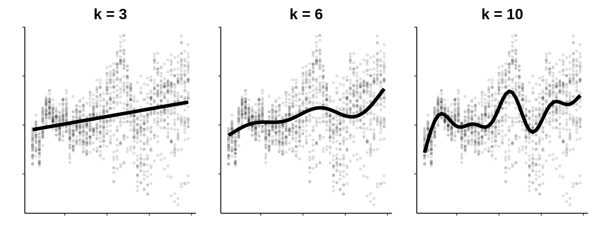
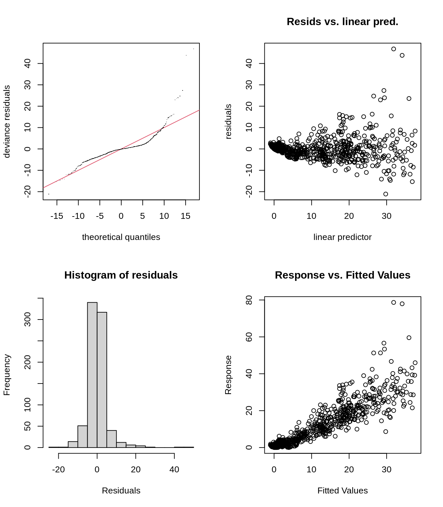

Chapitre 8 Validation d’un GAM
Jusqu’à présent, nous avons utilisé des modèles additifs Gaussiens (distribution Normale), l’équivalent non linéaire d’un modèle linéaire.
Mais que pouvons-nous faire si : - les observations de la variable de réponse ne suivent pas une distribution Normale ? - la variance n’est pas constante ? (hétéroscédasticité)
Tout comme les modèles linéaires généralisés (GLM), nous pouvons formuler des modèles additifs généralisés pour répondre à ces problèmes.
Cependant, les jeux de données en écologie ne respectent souvent pas les conditions des modèles Gaussiens. Donc, que pouvons-nous faire si les observations de la variable de réponse ne suivent pas une distribution normale ? Ou si la variance n’est pas constante (hétéroscédasticité) ?
Tout comme les modèles linéaires généralisés (GLM), nous pouvons formuler des modèles additifs généralisés pour répondre à ces problèmes.
Rappelons le modèle d’interaction pour les données de bioluminescence:
smooth_interact <- gam(Sources ~ Season + s(SampleDepth, RelativeDepth),
data = isit, method = "REML")
summary(smooth_interact)$p.table## Estimate Std. Error t value Pr(>|t|)
## (Intercept) 8.077356 0.4235432 19.070912 1.475953e-66
## Season2 4.720806 0.6559436 7.196969 1.480113e-12## edf Ref.df F p-value
## s(SampleDepth,RelativeDepth) 27.12521 28.77 93.91722 0Comme pour un GLM, il est essentiel de vérifier si nous avons correctement spécifié le modèle, et surtout la distribution de la variable réponse. Il faut vérifier:
- Le choix des dimensions de base
k. - La distribution des résidus de notre modèle, comme on fait pour un GLM (voir Workshop 6).
Heureusement, mgcv inclut des fonctions utiles pour la validation de modèle:
k.check()vérifie les dimensions de base.gam.check()fait une visualisation des résidus, et fournit également la sortie dek.check().
8.1 Choisir \(k\)
Dans le Chapter 5, nous avons discuté du rôle du paramètre de lissage \(\lambda\) pour contrôler les ondulations de nos fonctions de lissage. Cet ondulation est également contrôlé par la dimension de base \(k\), qui définit le nombre de fonctions de base utilisées pour créer une fonction lisse.
Chaque fonction lisse dans un GAM est essentiellement la somme pondérée de nombreuses fonctions plus petites, appelées fonctions de base. Plus le nombre de fonctions de base utilisées pour construire une fonction lisse est élevé, plus la fonction lisse est “ondulée”. Comme vous pouvez le voir ci-dessous, une fonction lisse avec une petite dimension de base de \(k\) sera moins ondulée qu’une fonction lisse avec une grande dimension de base de \(k\).

Tout au long de cet atelier, nous avons cherché à améliorer l’ajustement de notre modèle, c’est-à-dire que nous avons essayé de construire le meilleur GAM possible pour capturer les relations dans notre jeu de données. La clé pour obtenir un bon ajustement du modèle consiste à équilibrer le compromis entre deux éléments :
- Le paramètre de lissage \(\lambda\), qui _pénalise les ondulations ;
- La dimension de base \(k\), qui permet plus de flexibilité au modèle (plus d’ondulations) en fonction de nos données.
Avons-nous optimisé le compromis entre le lissage (\(\lambda\)) et la flexibilité (\(k\)) dans notre modèle?
8.1.1 Est-ce que notre module est assez flexible?
On n’a pas encore spécifié de valeur \(k\) dans notre modèle, mais gam() définit un \(k\) par défaut en fonction du nombre de variables sur lequel la fonction lisse est construite.
Est-ce que le k est assez grand?
## k' edf k-index p-value
## s(SampleDepth,RelativeDepth) 29 27.12521 0.9448883 0.0475Les EDF se rapprochent beaucoup de k. Ceci signifie que la flexibilité du modèle est restreint par le k utilisé par défaut, et que notre modèle pourrait mieux s’ajuster aux données si on permettait plus d’ondulations. En d’autres mots, nousn n’avons pas un compromis équilibré entre le lissage et l’ondulation du modèle.
Recommençons le modèle avec un k plus élevé:
smooth_interact_k60 <- gam(Sources ~ Season + s(SampleDepth,
RelativeDepth, k = 60), data = isit, method = "REML")Est-ce que le k est assez grand maintenant?
## k' edf k-index p-value
## s(SampleDepth,RelativeDepth) 59 46.03868 1.048626 0.905Les EDF sont beaucoup plus petits que k, donc notre modèle s’adjuste mieux aux données avec plus d’ondulations. On peut donc remplacer notre modèle avec cette version plus flexible:
8.1.2 Est-ce que notre modèle est réellement Normal?
Comme pour tout modèle Normal, nous devons vérifier certaines conditions avant de continuer. Nous pouvons évaluer la distribution des résidus du modèle pour vérifier ces conditions, tout comme nous le ferions pour un GLM (voir Atelier 6).
On peut visualiser les résidus du modèle avec gam.check():

##
## Method: REML Optimizer: outer newton
## full convergence after 4 iterations.
## Gradient range [-0.0005267781,0.0001620713]
## (score 2487.848 & scale 27.40287).
## Hessian positive definite, eigenvalue range [15.84516,393.7878].
## Model rank = 61 / 61
##
## Basis dimension (k) checking results. Low p-value (k-index<1) may
## indicate that k is too low, especially if edf is close to k'.
##
## k' edf k-index p-value
## s(SampleDepth,RelativeDepth) 59 46 1.05 0.87En plus des graphiques,
gam.check()fournit également la sortie dek.check().
Pour plus de détails et d’explications au sujet de l’interprétation des résidus, nous vous recommandons de consulter l’Atelier 4 et l’Atelier 6.
La visualisation des résidus met quelques problèmes en évidence:
- Figure 2: La variance des erreurs n’est pas constante (hétéroscédasticité).
- Figures 1 et 4: Quelques observations extrêmes.
Il semble qu’une distribution Normale est inappropriée pour modéliser notre variable réponse!